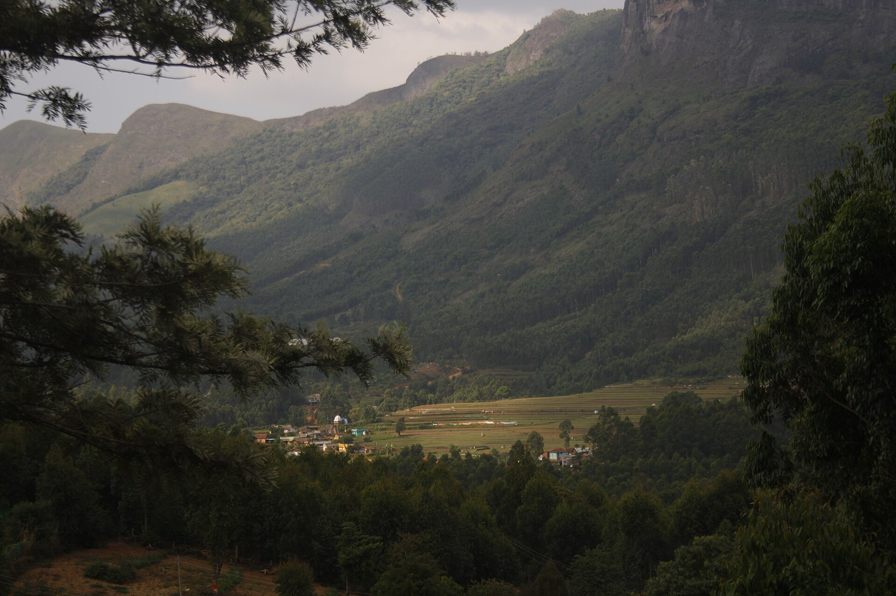
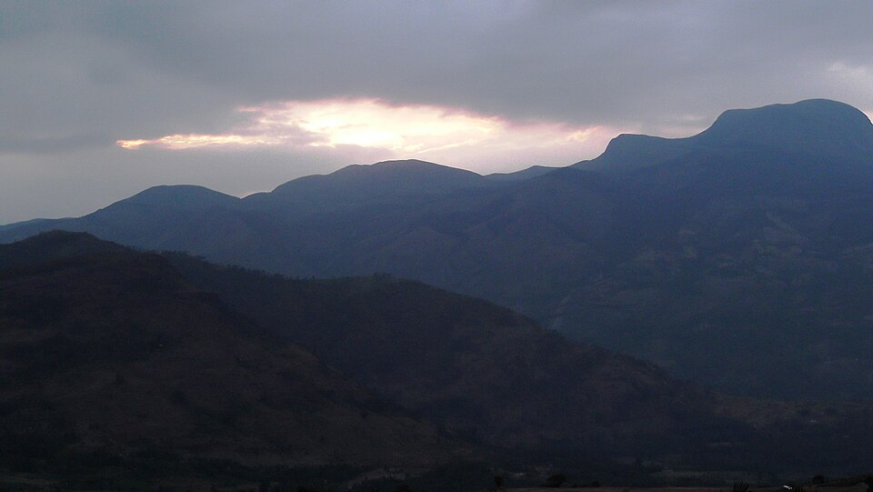
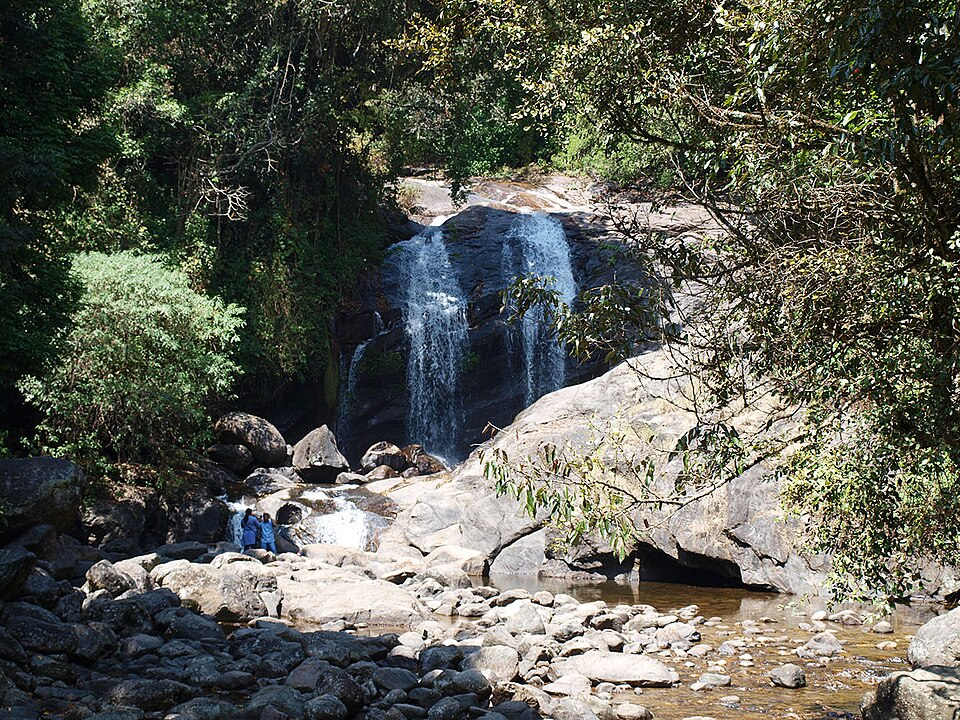
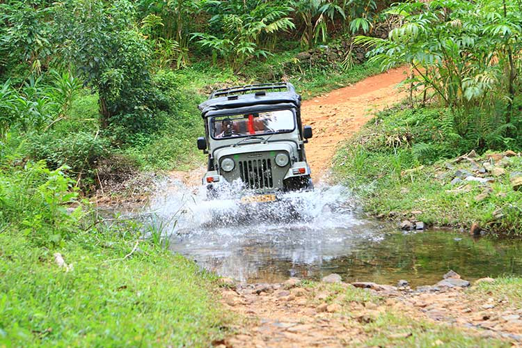
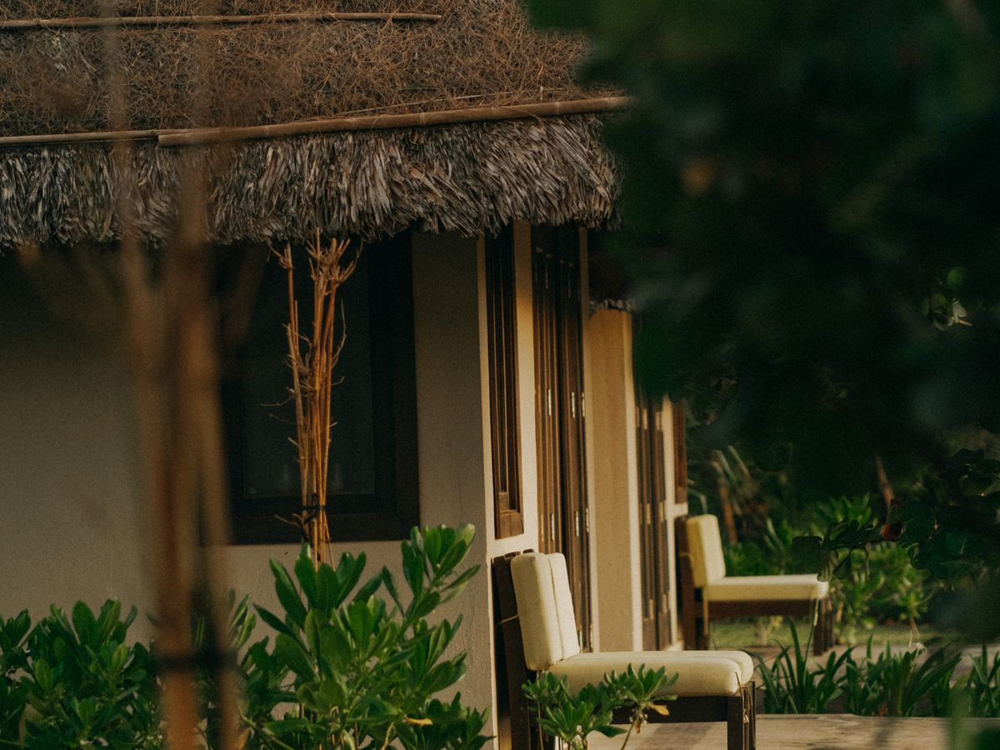
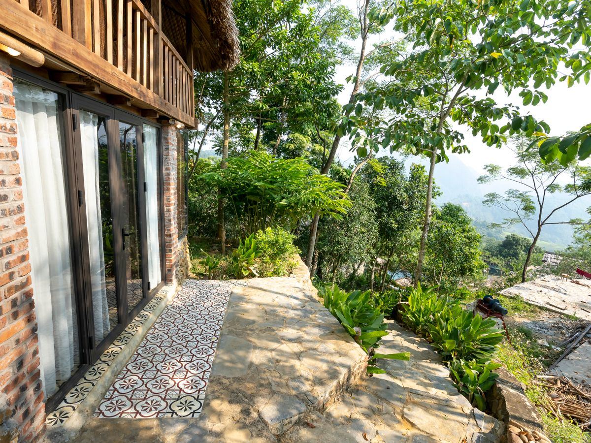
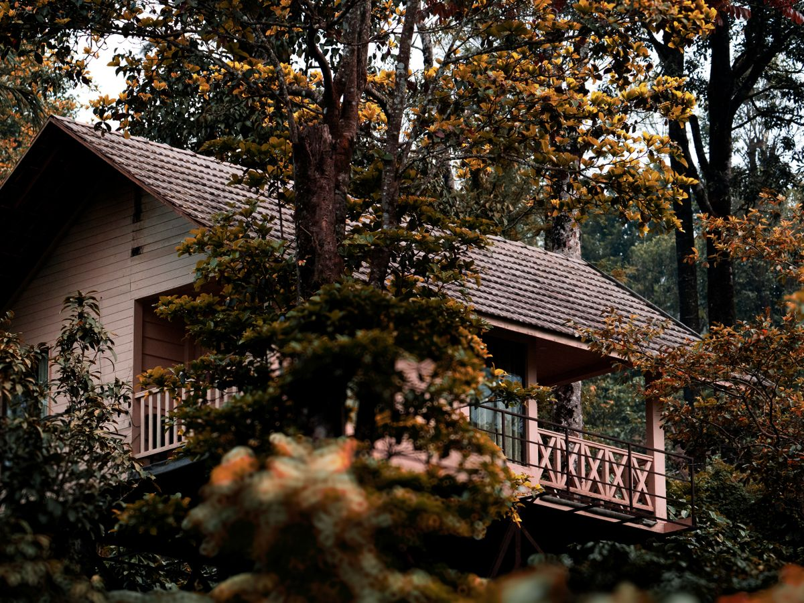

Farms & orchards
Kanthalloor
Explore Kerala's winter fruit basket, famous for its rare apple orchards, strawberry farms, and terraced vegetable cultivation in a cool, misty climate.

Kerala highlands
Discover waterfalls, cool hills, orchards, local stays, and quieter corners of Kerala.
A quieter side of Kerala
Kanthalloor is known as Kerala's winter fruit basket, with apple orchards, strawberry farms, and terraced vegetable cultivation in a cool, misty climate. Nearby Marayoor adds sandalwood forests, ancient dolmens, and local jaggery traditions to the journey.
Explore the region
Start with the orchards and villages, then make time for the forests and falling water around the highlands.
Farms & orchards
Explore Kerala's winter fruit basket, famous for its rare apple orchards, strawberry farms, and terraced vegetable cultivation in a cool, misty climate.

Heritage & nature
Discover Kerala's natural sandalwood forests, ancient prehistoric dolmens (Muniyaras), and the region's famous sweet jaggery.

Waterfalls
See the cascading waters of Lakkam, Attukal, and Thoovanam falls, surrounded by forests and tea estates.

Things to do
Travel through rugged terrain, forest routes, and tea plantations in the Western Ghats.
Walk through local farms and pick fresh fruit directly from orchards in this high-altitude village.
Join guided walks through Shola forests and wildlife sanctuaries, with panoramic views and encounters with nature.
Hospitality & stays
Choose from rustic retreats, local family homes, and elevated forest stays.

Eco stay
Experience a rustic, eco-friendly retreat in traditional mud-brick cottages that naturally stay cool and blend into their surroundings.

Local hospitality
Experience Kerala hospitality and home-cooked regional food while living with local families.

Nature stay
Stay elevated amid the canopies of the Western Ghats for an eco-tourism retreat.
Plan your journey
Reach out to customise your visit to the mist-shrouded hills, farms, forests, and waterfalls around Kanthalloor and Marayoor.
Send an email+91 94596258
Marayur, Kerala, India